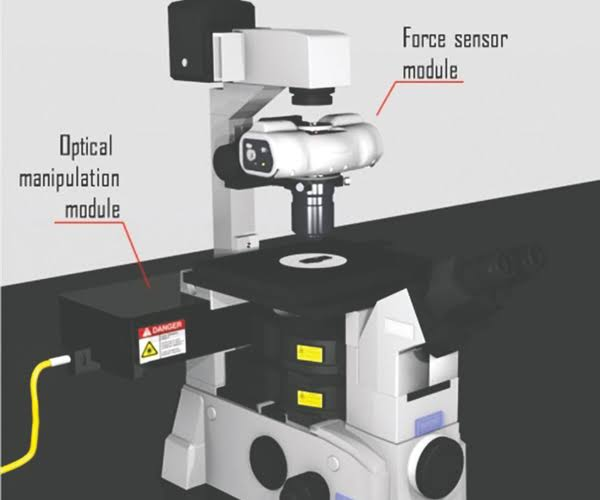

ARTHUR ASHKIN(1922-present)
আর্থার অ্যাশকিন (ইংরেজি: Arthur Ashkin; জন্ম: ২ সেপ্টেম্বর ১৯২২) হচ্ছেন একজন আমেরিকান বিজ্ঞানী ও নোবেল বিজয়ী, তিনি বেল ল্যাব ও লুসেন্ট টেকনোলজিতে কাজ করেছেন। অনেকে মনে করেন অ্যাশকিন অপটিক্যাল টুয়েজারের জনক, এ কারণেই 2018সালে নোবেল পুরষ্কার পান
| ARTHUR ASHKIN | |
|---|---|
| জন্ম | ২ সেপ্টেম্বর ১৯২২ (বয়স ৯৮) ব্রুকলিন, নিউ ইয়র্ক, যুক্তরাষ্ট্র |
| কর্মক্ষেত্র | পদার্থবিজ্ঞান |
| প্রতিষ্ঠান | বেল পরীক্ষাগার, লুসেন্ট টেকনোলজি |
| প্রাক্তন ছাত্র | কলম্বিয়া বিশ্ববিদ্যালয়, কর্নেল বিশ্ববিদ্যালয় |
| উল্লেখযোগ্য পুরষ্কার | পদার্থবিজ্ঞানে নোবেল (২০১৮) |
বিভিন্ন পেশাদার সোসাইটির সদস্যের পাশাপাশি অ্যাশকিন অপটিক্যাল সোসাইটি অব আমেরিক (OSA), মার্কিন ফিজিক্যাল সোসাইটির (APS) এবং ইন্সটিউট অব ইলেক্ট্রিক্যাল এন্ড ইলেক্ট্রনিক্স ইঞ্জিনিয়ারসের (IEEE) ফেলো। ৪০ বছর কাজের পর ১৯৯২ সালে তিনি বেল ল্যাব থেকে পদত্যাগ করেন। সেসময়ে তিনি প্রায়োগিক পদার্থবিজ্ঞানে অনেক অবদান রাখেন। তিনি অনেক গবেষণা প্রতিবেদনের লেখক ছিলেন এবং তার নামে ৪৭ টি পেটেন্ট আছে। তিনি ২০০৩ সালে জোসেফ এফ. কেইথলি এবং ২০০৪ সালে হার্ভার্ড পুরস্কার পান। তিনি ১৯৮৪ সালে ন্যাশনাল একাডেমী অব ইঞ্জিনিয়ারিং এবং ১৯৯৬ সালে ন্যাশনাল একাডেমী অব সায়েন্স প্রতিষ্ঠানে গবেষণার জন্য নির্বাচিত হন। বর্তমানে তিনি তার ঘরের পরীক্ষাগারেই তার কাজ চালিয়ে যাচ্ছেন। অপটিক্যাল টুয়েজার ছাড়াও, আসকিন ফটোরিফ্র্যাকশন, সেকেন্ড হারমোনিক জেনারেশন, এবং ফাইবারে নন-লিনিয়ার অপটিকসের জন্য প্রখ্যাত ।
তার তৈরি কৃত আবিষ্কারঃ
GERARD MOUROU(1944-present)
Gerard Albert Mourou (French: [ʒeʁaʁ muʁu]; born 22 June 1944) is a French scientist and pioneer in the field of electrical engineering and lasers. He was awarded a Nobel Prize in Physics in 2018, along with Donna Strickland, for the invention of chirped pulse amplification, a technique later used to create ultrashort-pulse, very high-intensity (petawatt) laser pulses
| GERARD MOUROU | |
|---|---|
| BORN | Gérard Albert Mourou 22 June 1944 (age 76) Albertville, Occupied France |
| EDUCATION | University of Grenoble (BSc, MSc) Pierre and Marie Curie University (PhD) |
| KNOWN FOR | Chirped pulse amplification |
| AWARD | Nobel Prize in Physics (2018) |
| SCIENTIFIC CAREER | |
| INSTITUTION | École polytechnique ENSTA ParisTech University of Rochester University of Michigan |
| DOCTORAL STUDENTS | Donna Strickland |
In 1994, Mourou and his team at the University of Michigan discovered that the balance between the self-focusing refraction (see Kerr effect) and self-attenuating diffraction by ionization and rarefaction of a laser beam of terawatt intensities in the atmosphere creates "filaments" which act as waveguides for the beam, thus preventing divergence.
©faysal hossain
DONNA STRICKLAND(1959-present)
Donna Theo Strickland, FRS CC (born 27 May 1959) is a Canadian optical physicist and pioneer in the field of pulsed lasers. She was awarded the Nobel Prize in Physics in 2018, together with Gérard Mourou, for the practical implementation of chirped pulse amplification. She is a professor at the University of Waterloo in Ontario, Canada.
| DONNA STRICKLAND | |
|---|---|
| BORN | Donna Theo Strickland 27 May 1959 (age 61) Guelph, Ontario, Canada |
| EDUCATION | McMaster University (BEng) University of Rochester (MS, PhD) |
| KNOWN FOR | interactions Nonlinear optics Short-pulse intense laser systems Chirped pulse amplification Ultrafast optics |
| SPOUSE(S) | Doug Dykaar |
| CHILDREN | 2 |
| AWARDS | Alfred P. Sloan Research Fellowship (1998) Fellow of the Optical Society (2008) Nobel Prize in Physics (2018) Member of the National Academy of Sciences (2020) |
| SCIENTIFIC CAREER | |
| FIELDS | Physics Optics Lasers Institutions University |
| THESIS | Development of an ultra-bright laser and an application to multi-photon ionization (1988) |
| DOCTORAL ADVISOR | GERARD MOUROU |
She served as fellow, vice president, and president of The Optical Society, and is currently chair of their Presidential Advisory Committee. In 2018, she was listed as one of BBC's 100 Women.
Donna Strickland:Nobel Lecture In Physics 2018
©faysal hossain